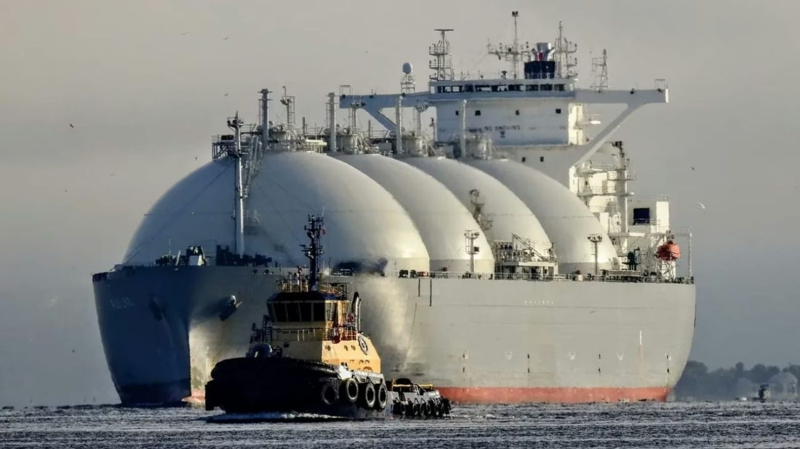

Camuzzi anuncia “LNG del Plata”: inversión de US$ 3.900 millones para exportar GNL desde La Plata
Camuzzi invertirá US$ 3.900 millones en “LNG del Plata” para exportar GNL desde La Plata, con 2,4 M t/año, US$ 14.500 millones proyectados y 500 empleos directos.

La empresa Camuzzi ha confirmado oficialmente el lanzamiento de “LNG del Plata”, una ambiciosa iniciativa que busca transformar el Puerto de La Plata en un punto estratégico para la salida de energía al exterior. Este proyecto permitirá procesar y exportar Gas Natural Licuado (GNL) directamente desde la provincia de Buenos Aires, aprovechando la infraestructura portuaria existente para conectar los recursos naturales argentinos con los mercados internacionales de una manera más eficiente.
El plan técnico diseñado para esta terminal contempla una capacidad de producción de 2,4 millones de toneladas anuales de gas licuado. Con este volumen de operación, se estima que las exportaciones totales podrían alcanzar los US$ 14.500 millones, lo que representaría un ingreso de divisas fundamental para la economía del país y colocaría a la región del Río de la Plata en el mapa de los grandes proveedores energéticos globales.
Además de los beneficios económicos directos, el proyecto tendrá un impacto social y productivo muy importante, ya que prevé la creación de 500 empleos directos altamente calificados y miles de puestos indirectos. Esta iniciativa fortalecerá toda la cadena energética, impulsando a las pequeñas y medianas empresas proveedoras de servicios que giran en torno a la industria del gas y la logística portuaria de la zona.
La base de todo este desarrollo es el potencial de Vaca Muerta, el yacimiento que proveerá la materia prima necesaria para que la planta funcione a pleno rendimiento. Al concretarse, esta iniciativa no solo busca cubrir la demanda interna, sino posicionar definitivamente a la Argentina como un competidor serio en el mercado global del gas, compitiendo con otros grandes exportadores y garantizando seguridad energética para el futuro.